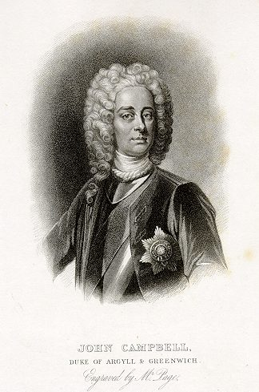
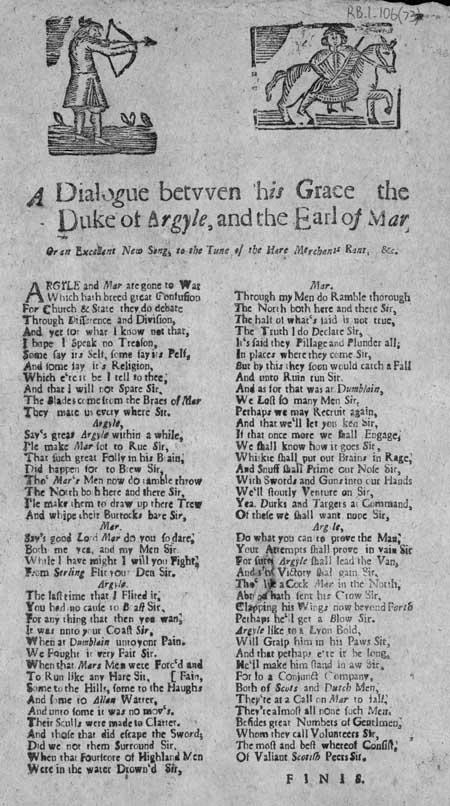
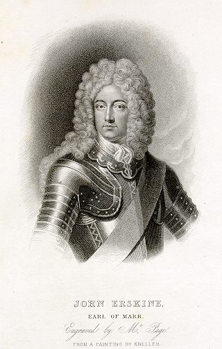

A Dialogue between his Grace the
Duke of Argyle, and the Earl of Mar [1]
1. ARGYLE and Mar are gone to war
Which hath bred great confusion
For Church & State they do debate
Through difference and division,
And yet for what I know not that,
I hope I speak no treason,
Some say it's self, some say it's pelf,
And some say it's religion,
Which ere it be I tell to thee,
And that I will not spare Sir,
The blades come from the Braes of Mar
They mar us everywhere Sir.
2.
Argyle
Says great Argyle
"Within a while,
I'll make Mar for to rue, Sir.
That such great Folly in his brain,
Did happen for to brew, Sir.
Though Mar's men now do ramble through
The North both here and there, Sir,
I'll make them to draw up their trews
And whip their buttock bare Sir."
Mar
Says good Lord Mar
"Do you so dare
Both me, yea, and my men, Sir?
While I have might, I will you fight
From Stirling flit your den, Sir.
3.
Argyle
"The last time that I flitted it,
You had no cause to boast Sir,
For anything that then you wan,
It was onto your coast Sir.
When at Dumblain [2] unto yon pain.
We fought it very fair Sir.
When that Mar's men were forced and fain,
To run like any hare Sir,
Some to the hills, some to the haughs
And some to
Allan Water,
And unto some it was no moves.
Their sculls were made to clatter.
And those that did escape the sword ,
Did we not them surround, Sir,
When that fourscore of Highland men
Were in the water drowned Sir?"
4.
Mar
"Though my men do ramble through
The North [3] both here and there, Sir,
The half of what's laid is not true,
The truth I do declare, Sir,
It's said they pillage and plunder all ,
In places where they come Sir,
But by this they soon would catch a fall
And unto ruin run Sir,
And as for that was at Dumblain,
We lost so many men Sir,
Perhaps we may recruit again,
And that we'll let you ken Sir,
If that once more we shall engage,
We shall know how it goes Sir,
Whisky shall put our brains in rage,
And snuff shall prime our nose Sir,
With sword and guns into our hands
We'll stoutly venture on Sir,
With dirks and targets at command,
Of these we shall want nope Sir."
5.
Argyle
"Do what you can to prove the man,
Your attempts shall prove in vain, Sir
For sure Argyle shall lead the van,
And anew Victory shall gain Sir,
Though like a cock Mar in the North [3],
Abroad hath sent his crow Sir,
Clapping his wings now beyond Forth
Perhaps he'll get a blow Sir.
Argyll like to a lion bold,
Will grasp him in his paws, Sir,
And that perhaps ere if be long,
We'll make him stand in awe, Sir.
For so a conjunct company,
Both of Scots and Dutchmen,
They're at a call on Mar to fall,
They're almost all none such men,
Besides great numbers of Gentlemen ,
Whom they call Volunteers, Sir,
The most and best whereof consist
Of valiant Scottish Peers, Sir."
F I N I S.
|


Broadside from the National Library of Scotland Collection - Probable date of publication : 1715
Shelfmark: RB.1. 106 (073)

|
Dialogue entre Monsieur le Duc
D'Argyll et le Comte de Mar [1]
1. Argyll et Mar se font la guerre:
Et sèment le désordre.
Est-ce la Foi ou bien l'Etat,
L'objet de leur discorde?
Mais, allons donc! La vrai raison
-Ce n'est pas trahir un secret --
C'est la fierté, l'avidité
Qui sont, dit-on, leur religion.
Qui commença? Je ne vais pas
Me priver de le dire.
Les bretteurs partis de Braemar,
Sont notre cauchemar, oui.
2.
Argyll
Argyll le Grand dit
"Il est temps,
Donc, que Mar se repente,
D'avoir ourdi dans sa folie,
Manoeuvre aussi méchante.
Ses fantassins que l'on voit in--
Fester l'Ecosse entière,
Enlèveront leurs braies, que l''on
Leur fouette le derrière."
Mar
Mar protestait:
"Vous m'insultez
Par ces propos indignes!
Quand je pourrai vous attaquer,
Vous quitterez Stirling, oui!"
3.
Argyll
"C'est ce que je fis, il y a peu,
Et n'en tirez point gloire.
Car tout ce qui en est sorti
Ce fut notre victoire.
Quand à Dumblain [2], presque sans peine,
Les nôtres l'emportèrent,
Qui donc fut bien aise et contraint
De fuir comme des lièvres,
Par les montagnes, par les bois
Même par la rivière?
Certain de fuir n'eurent le choix,
Le crâne en calebasse.
Les rescapés furent cernés
Et pris dans une nasse:
Quatre-vingts enfants des Highlands,
Tous noyés dans
l'Allan
, oui."
4.
Mar
"Si mon armée s'est égaillée
De manière confuse,
Mes hommes n'ont pas fait ce dont.
La rumeur les accuse!
Pour les pillages et ravages
Qu'ils auraient pu commettre,
Un châtiment prompt les attend,
Je peux vous le promettre.
Quant à nos pertes à Dumblain,
Que vous jugez sérieuses,
Vous nous verrez les compenser.
Vous en aurez la preuve.
Et j'ai trouvé quel procédé
Cette fois est de mise:-
Qu'un whisky mette en feu nos têtes,
Et nos nez une prise,
En mains épées et pistolets
Nous retournons nous battre
Avec nos écus, nos stylets.
Nous sommes opiniâtres!".
5.
Argyll
"Vous aurez beau jouer au héros,
Je n'y vois que bravade.
Notre succès est assuré:
J'irai dans l'avant-garde.
Et bien qu'encor, le coq du Nord [3]
Nous casse les oreilles
Battant des ailes jusqu'au Forth,
L'issue sera pareille.
Vous verrez Argyll tel un lion
Le saisir en ses griffes.
Avant longtemps nous calmerons
Son humeur combative.
Et quand les Hollandais, les Scots
S'uniront pour la guerre,
Mar tombera, n'en doutez-pas,
Car cette troupe altière
Ne comprend que des courageux
Qu'on nomme Volontaires
Et les plus valeureux d'entre eux
Sont Ecossais et Pairs, oui."
(Trad. Ch.Souchon(c)2006)
|